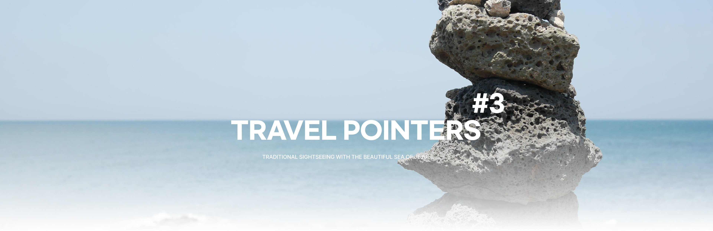
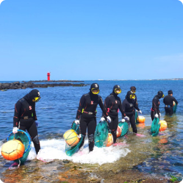
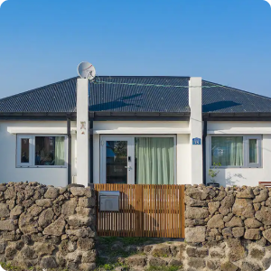
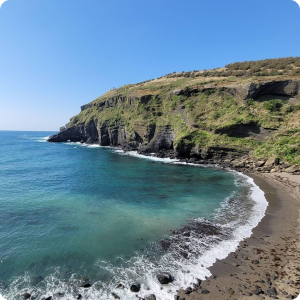
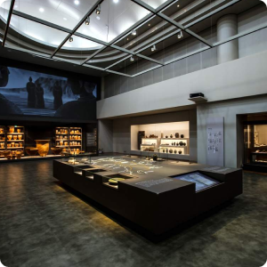

|  |
Hado Fishing Experience Village
Hado Fishing Experience Village offers Jeju’s unique ‘haenyeo’ experience
where you dive deep inside the sea wearing a black diving suit
and seek the seafood. This experience will take about two and a half hours.
Those who have experienced haenyeo can enjoy various experiences
such as bamboo fishing, fishing, and snorkeling for free for half a day.
Homepage : https://www.seantour.com/village/hado/main Address : 1897-27 Sunrise Coastal Road, Gujwa-eup, Jeju City, Jeju-do Tel : 064-783-1996 |
|
12.9km
|
|
|  |
Seohwa Udo
Seohwa Udo, an accommodation located in Udo-myeon, was remodeled
with a modern interpretation of the beautiful traditional Jeju stone house.
You can feel the beautiful Jeju Island with basalt stepping stones,
palm trees, and stone walls.
Homepage : https://seohwaudo.co.kr/ Address : 75 Samyang Gosu-gil, Udo-myeon, Jeju-si, Jeju-do Tel : 010-8861-7280 |
|
3m
|
|
|  |
Geommeolle Beach
Geommeolle Beach, well-known for its black sands, offers amazing experience
in the sea. Catch a sightseeing boat called ‘Olle-boat’, for a closer look
at the scenery view of Udo.
Homepage : - AAddress : Udohaean-gil, Udo-myeon, Jeju-si, Jeju-do Tel : 064-728-3394 |
|
46.1km
|
|

|
Dongmun Traditional Market
Located in the center of Jeju Island, it is the largest and most historic
permanent traditional market. You can enjoy the beauty of the market
which contains the lives of merchants in Jeju Island during the day,
and the beauty of the night market full of delicious food at night.
As it is the largest market of Jeju Island, there are a total of 12 entrances.
Handmade menbosha, grilled lobster cheese, and black pork ogyeopsal are famous
in the night market.
Homepage : - https://www.visitjeju.net/kr/detail/view?contentsid=CONT_000000000500745 Address : 20 Gwandeok-ro 14-gil, Jeju-si, Jeju-do Tel : 064-752-3001 |
|
3.2km
|
|
|  |
Jeju National Museum
Jejudo Island, with its splendid natural environment and favorable geographic
location, has long been the center of the unique maritime culture
that has flourished since prehistoric times. Jeju National Museum consistently
offers a variety of exhibitions with educational and cultural programs
on Jeju's culture. It will be the best tourist attraction to learn
about Jeju and its tradition.
Homepage : https://jeju.museum.go.kr/html/kr/index.html Address : 17 Iljudong-ro, Jeju-si, Jeju-do Tel : 064-720-8000 |